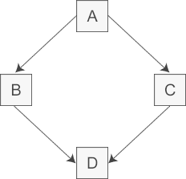

首页 > 编程笔记
C++虚继承和虚基类（入门必读）
C++ 支持多继承，即一个派生类可以继承多个父类。
多继承中有一个比较常见的问题，就是会导致数据重复，并由此带来数据不一致的情况。
例如，一个派生类 D 从两个基类 B 和 C 中派生，而这两个基类又有一个共同的基类 A，这就会导致 A 的数据在 D 中被重复两次，如下图所示：
图中，D 多继承 B 和 C，将 B 和 C 的数据复制到 D 中。由于 A 的数据已经分别被 B 和 C 继承，所以 A 的数据在 D 中将重复两次。
从逻辑的角度来讲，在 D 类的对象中 A 的数据应当只有一份，为了解决多继承导致的数据冗余和数据不一致的问题，C++ 提出了虚继承。
结合图 1，A 类中定义一个数据 a，B 类和 C 类分别虚继承 A 类，而 D 类又多继承 B 类和 C 类，则在 D 类的对象中，数据 a 将只有一份，而不像普通多继承那样有两份数据 a。
与普通继承不同，虚继承中派生类对象并不是在其内存中保留一份虚基类数据的副本，而是通过一种间接的引用方式，即将虚基类子对象的数据单独存放，在派生类对象中设置一个指针指向基类子对象。这样，当一个派生类通过多个继承路径继承同一个虚基类时，并不需要产生多个数据副本，而只要维护这个虚基类指针即可。
由于是虚继承，无论虚基类在一个派生类中出现多少次，其数据只有一份。因此在派生类的成员函数中，或者通过派生类对象和指针访问虚基类的成员时，可以不使用域运算符::。
例如，对于 A 类中的成员变量 a，D 类中的成员函数或者通过 D 类对象（或指针）访问数据 a 时，可以直接访问：
C++ 对虚基类的初始化进行了特殊处理，虚基类的初始化由最终的派生类负责。分析下面这个程序：
现在采用了虚继承，虚基类 A 在最终派生类 D 中只保留了一份成员变量 m_a，如果由 B 和 C 初始化 m_a，那么 B 和 C 在调用 A 的构造函数时很有可能给出不同的实参，这个时候编译器就会犯迷糊，不知道使用哪个实参初始化 m_a。
为了避免出现这种矛盾的情况，C++ 干脆规定必须由最终的派生类 D 来初始化虚基类 A，直接派生类 B 和 C 对 A 的构造函数的调用是无效的。在第 50 行代码中，调用 B 的构造函数时试图将 m_a 初始化为 90，调用 C 的构造函数时试图将 m_a 初始化为 100，但是输出结果有力地证明了这些都是无效的，m_a 最终被初始化为 50，这正是在 D 中直接调用 A 的构造函数的结果。
另外需要关注的是构造函数的执行顺序。虚继承时构造函数的执行顺序与普通继承时不同：在最终派生类的构造函数调用列表中，不管各个构造函数出现的顺序如何，编译器总是先调用虚基类的构造函数，再按照出现的顺序调用其他的构造函数；而对于普通继承，就是按照构造函数出现的顺序依次调用的。
虽然虚继承可能增加一些开销，但它是在一些特定情况下维护清晰继承关系的有用工具。通过在设计中合理使用虚继承，可以避免继承层次结构中的问题，确保代码的可维护性和可读性。
多继承中有一个比较常见的问题，就是会导致数据重复，并由此带来数据不一致的情况。
例如，一个派生类 D 从两个基类 B 和 C 中派生，而这两个基类又有一个共同的基类 A，这就会导致 A 的数据在 D 中被重复两次，如下图所示：

图 1 菱形继承
图 1 菱形继承
图中，D 多继承 B 和 C，将 B 和 C 的数据复制到 D 中。由于 A 的数据已经分别被 B 和 C 继承，所以 A 的数据在 D 中将重复两次。
从逻辑的角度来讲，在 D 类的对象中 A 的数据应当只有一份，为了解决多继承导致的数据冗余和数据不一致的问题，C++ 提出了虚继承。
虚继承的定义
虚继承可以保证基类的数据在派生类中只有一份。虚继承的方法是在普通继承的基类名前加上 virtual 关键字，如下所示：
class Derived : virtual public Base {
// 派生类的成员和函数定义
};
例如，Mammal 类从 Animal 类虚继承：
class Animal {
//......
};
class Mammal : virtual public Animal {
//......
};
虚继承中的基类也称做“虚基类”，和多继承一样，虚基类也可以有多个，中间用逗号分隔。而且在定义派生类的过程中，虚基类和非虚基类可以一起使用。虚继承对象的内存布局
一般来讲，虚继承用在具有三层以及三层以上的类层次结构中。当一个新的类多继承几个基类，而这几个基类又“虚拟”继承自同一个基类，则这个新类对象的内存将因虚拟继承而改变，即在新类的对象中，最初那个基类的数据将只有一份副本。结合图 1，A 类中定义一个数据 a，B 类和 C 类分别虚继承 A 类，而 D 类又多继承 B 类和 C 类，则在 D 类的对象中，数据 a 将只有一份，而不像普通多继承那样有两份数据 a。
与普通继承不同，虚继承中派生类对象并不是在其内存中保留一份虚基类数据的副本，而是通过一种间接的引用方式，即将虚基类子对象的数据单独存放，在派生类对象中设置一个指针指向基类子对象。这样，当一个派生类通过多个继承路径继承同一个虚基类时，并不需要产生多个数据副本，而只要维护这个虚基类指针即可。
由于是虚继承，无论虚基类在一个派生类中出现多少次，其数据只有一份。因此在派生类的成员函数中，或者通过派生类对象和指针访问虚基类的成员时，可以不使用域运算符::。
例如，对于 A 类中的成员变量 a，D 类中的成员函数或者通过 D 类对象（或指针）访问数据 a 时，可以直接访问：
D dObj; dObj.a = 10; // 通过 D 类对象访问 a D *pObj = new D; pObj->a = 100; // 通过 D 类指针访问 a
虚继承中的构造函数
在虚继承中，由于虚基类的数据只有一份，所以在间接派生类构造时需要特殊处理，即只能初始化虚基类一次。C++ 对虚基类的初始化进行了特殊处理，虚基类的初始化由最终的派生类负责。分析下面这个程序：
#include <iostream>
using namespace std;
//虚基类A
class A{
public:
A(int a);
protected:
int m_a;
};
A::A(int a): m_a(a){ }
//直接派生类B
class B: virtual public A{
public:
B(int a, int b);
public:
void display();
protected:
int m_b;
};
B::B(int a, int b): A(a), m_b(b){ }
void B::display(){
cout<<"m_a="<<m_a<<", m_b="<<m_b<<endl;
}
//直接派生类C
class C: virtual public A{
public:
C(int a, int c);
public:
void display();
protected:
int m_c;
};
C::C(int a, int c): A(a), m_c(c){ }
void C::display(){
cout<<"m_a="<<m_a<<", m_c="<<m_c<<endl;
}
//间接派生类D
class D: public B, public C{
public:
D(int a, int b, int c, int d);
public:
void display();
private:
int m_d;
};
D::D(int a, int b, int c, int d): A(a), B(90, b), C(100, c), m_d(d){ }
void D::display(){
cout<<"m_a="<<m_a<<", m_b="<<m_b<<", m_c="<<m_c<<", m_d="<<m_d<<endl;
}
int main(){
B b(10, 20);
b.display();
C c(30, 40);
c.display();
D d(50, 60, 70, 80);
d.display();
return 0;
}
运行结果为：
m_a=10, m_b=20
m_a=30, m_c=40
m_a=50, m_b=60, m_c=70, m_d=80
现在采用了虚继承，虚基类 A 在最终派生类 D 中只保留了一份成员变量 m_a，如果由 B 和 C 初始化 m_a，那么 B 和 C 在调用 A 的构造函数时很有可能给出不同的实参，这个时候编译器就会犯迷糊，不知道使用哪个实参初始化 m_a。
为了避免出现这种矛盾的情况，C++ 干脆规定必须由最终的派生类 D 来初始化虚基类 A，直接派生类 B 和 C 对 A 的构造函数的调用是无效的。在第 50 行代码中，调用 B 的构造函数时试图将 m_a 初始化为 90，调用 C 的构造函数时试图将 m_a 初始化为 100，但是输出结果有力地证明了这些都是无效的，m_a 最终被初始化为 50，这正是在 D 中直接调用 A 的构造函数的结果。
另外需要关注的是构造函数的执行顺序。虚继承时构造函数的执行顺序与普通继承时不同：在最终派生类的构造函数调用列表中，不管各个构造函数出现的顺序如何，编译器总是先调用虚基类的构造函数，再按照出现的顺序调用其他的构造函数；而对于普通继承，就是按照构造函数出现的顺序依次调用的。
虚继承的缺点
虚继承虽然可以解决多继承带来的数据冗余和数据不一致的缺点，但本身也存在一些问题，具体问题如下：1) 损失效率
为了保证虚基类的数据在派生类中只出现一次，必须采用一种间接的方式访问虚基类，从而在一定程度上损失了效率。2) 派生类要显式初始化虚基类
通常从开发者的角度来讲，设计一个派生类只要初始化其直接基类即可。但是如果在类的派生层次中存在虚基类，那么派生类始终要负责这些虚基类的初始化，这在一定程度上导致了设计的复杂化。总结
虚继承是 C++ 多继承中的一个重要概念，用于解决菱形继承等导致的数据成员冲突和二义性问题。虽然虚继承可能增加一些开销，但它是在一些特定情况下维护清晰继承关系的有用工具。通过在设计中合理使用虚继承，可以避免继承层次结构中的问题，确保代码的可维护性和可读性。
关注公众号「站长严长生」，在手机上阅读所有教程，随时随地都能学习。内含一款搜索神器，免费下载全网书籍和视频。

微信扫码关注公众号